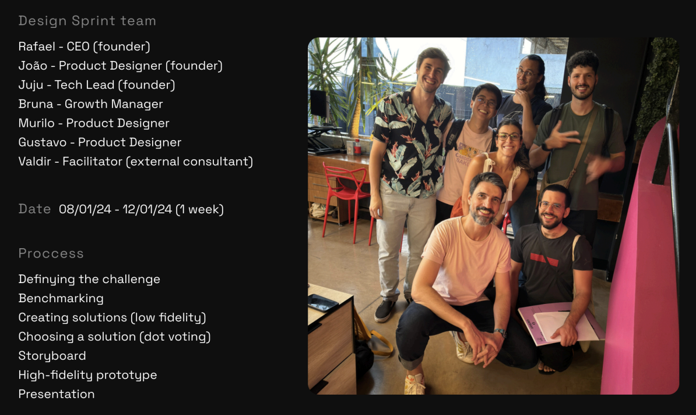
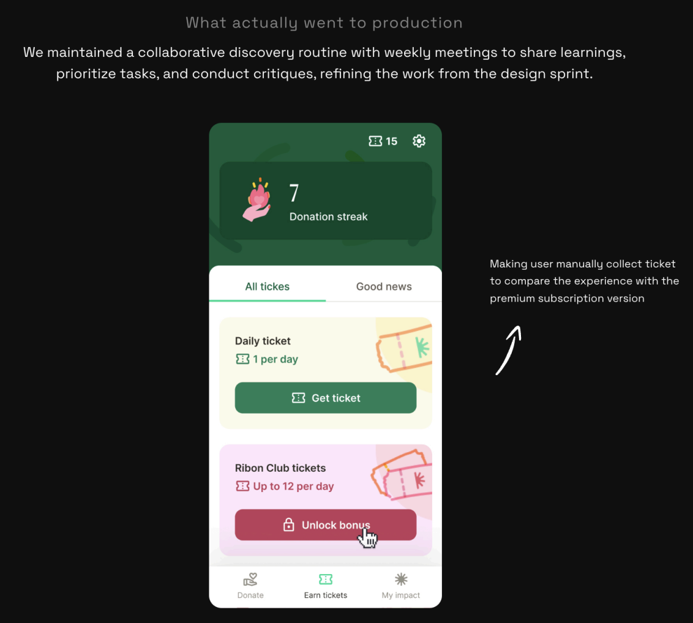
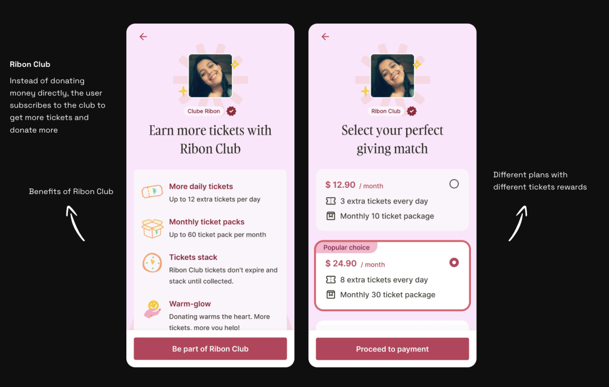
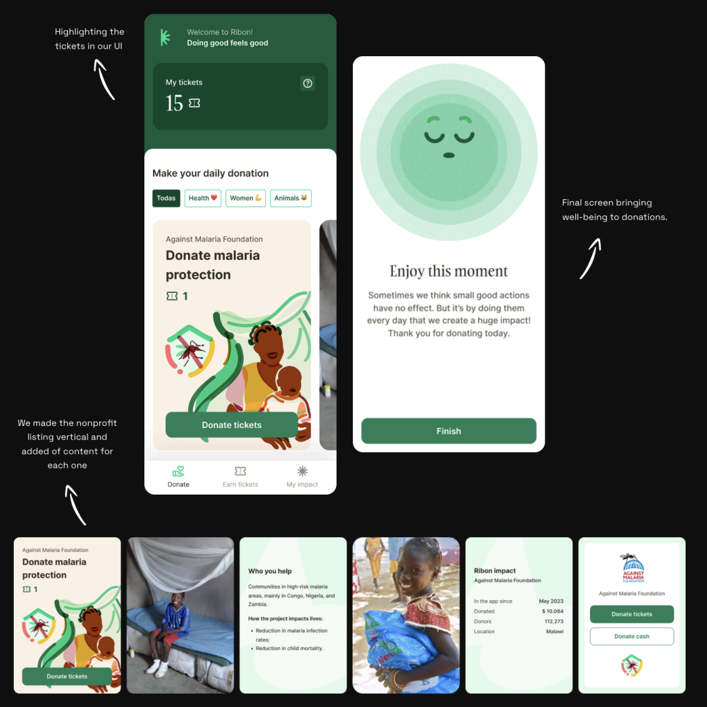
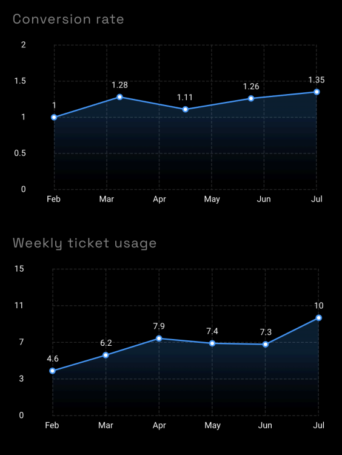
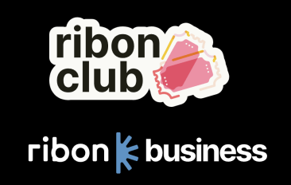
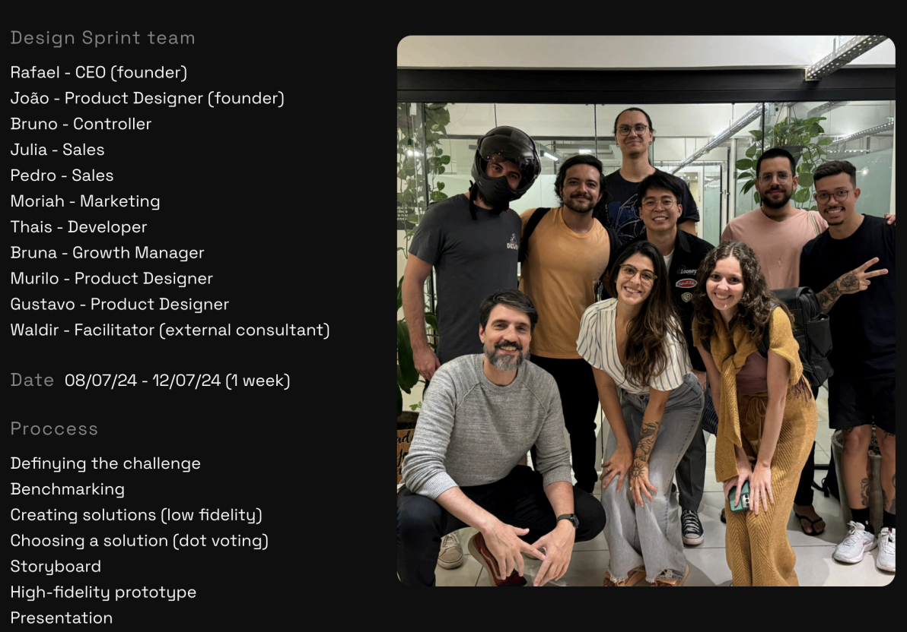
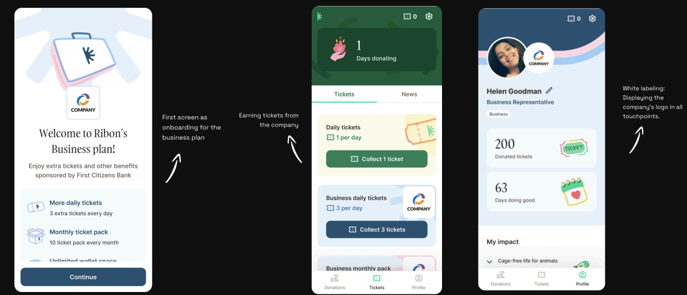
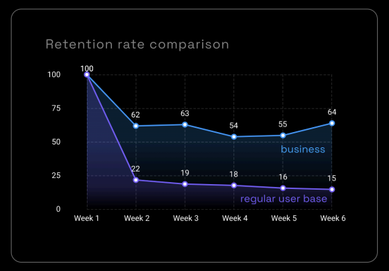

About Ribon
Ribon is a social impact startup that facilitates donations to nonprofits through an innovative and accessible model. Users donate to social causes at no cost, using "tickets" — a virtual currency earned by engaging with content.
These tickets are sponsored by philanthropists and companies committed to expanding collective social impact. Ribon generates revenue when users choose to donate with their own funds after experiencing donations with the virtual currency.
Strategic Shift
While working on conversion and acquisition in the app, we identified two signals that would shape an entire strategic pivot:
Users valued the tickets more than the donations themselves. Emotional connection — not the cause alone — was the key driver of engagement and conversion.
This led us to organize our first Design Sprint, aiming to strengthen the experience and reimagine Ribon as a well-being platform.
Leading the transition,
end to end
- 01 Facilitated two Design Sprints — structured discovery processes to align the team around key insights and prototype solutions rapidly.
- 02 Led user research and qualitative interviews using the Jobs to Be Done framework, identifying the emotional and social motivations driving engagement.
- 03 Drove product roadmap and delivery for the B2B MVP, coordinating cross-functional squads while keeping the B2C operation active and stable.
- 04 Repositioned Ribon's go-to-market strategy — from broad B2C acquisition to a structured B2B motion targeting enterprise clients in Brazil and the U.S.
- 05 Revamped website and sales materials to align with enterprise sales cycles and reflect the new positioning around employee well-being.
Emotion & Connection
tied to a subscription model
In the first semester, we identified two core tensions in user behavior that pointed to a bigger opportunity. The challenge was clear: increase the perceived value of tickets and highlight the well-being associated with donating.

The sprint revealed a clear duality: gamification drove habitual behavior, while personal identification with causes drove emotional depth. The prototype we built leaned into both.
Sprint Deliverables


Stable conversion,
growing engagement
The Design Sprint expanded our vision, positioning Ribon as a well-being experience beyond just a donation app. Ribon Club launched in March, and we saw positive momentum across key metrics in the first half of the year.

Ribon Club
for corporate campaigns
In the second half of the year, an international bank approached us with a proposal: use the Ribon app for its corporate donation campaign, offering Ribon Club subscriptions to employees.
Our focus on well-being was a key differentiator. While traditional corporate social programs generate around two donations per year, the Ribon app achieved this frequency weekly — 20 times more.
Given the high projected revenue margin, we began adapting the app as an MVP to support the partnership, and planned a second Design Sprint to tackle this new challenge.

Visibility & Purpose
in the corporate environment
We benchmarked against competitors like Benevity, Blackbaud, and Cauze to identify differentiation opportunities. Our main advantage: a product built around the well-being of the end user — not just corporate reporting.
Using the Jobs to Be Done methodology, we interviewed employees already participating in corporate social programs. Two core jobs emerged:
Visibility
Being recognized and admired by leaders, peers, and subordinates. Participation was often tied to career advancement and social positioning within the company.
Purpose
Personal identification with a cause — donating because it genuinely resonated with individual values, life experiences, or community ties.

Sprint Deliverables

Validating at scale
before full commitment
Before starting the full project with the bank or shifting our entire strategy, we tested the B2B model on a smaller scale — a lab that used Ribon in its annual social team competition.
Without the developed features, we made only flow adjustments to create an MVP. The results exceeded expectations.

From broad to focused:
scaling the B2B motion
After validating the B2B opportunity, it was clear Ribon needed a structured acquisition strategy to engage enterprise clients at scale. I led this transition — repositioning Ribon from broad B2C to a targeted B2B strategy, with a clear go-to-market motion in Brazil and groundwork for international expansion.

Blackbaud Accelerator
Selected for Blackbaud's accelerator program, establishing Ribon as a credible player in the corporate social impact space.
Enterprise Pipeline — 3 months
Secured advanced negotiations with two major U.S. corporations in just three months, validating the go-to-market strategy.
What this case
taught me
Emotional behavior is a strategic asset. What users valued most — the game-like ticket loop — wasn't just a UX quirk. It was the core differentiator that made Ribon 20x more frequent than traditional corporate programs. Understanding this pattern unlocked the entire B2B pivot.
Validate before you build. The lab POC — run without the fully developed features — confirmed the B2B hypothesis with compelling retention data. It gave us the confidence to invest in the full pivot without committing the whole roadmap prematurely.
Jobs to Be Done surfaces what surveys miss. Employees in corporate social programs weren't driven by altruism alone — visibility and career signaling were powerful motivators. Designing for both jobs, not just the "noble" one, made the product genuinely more effective.
A platform
reimagined
What started as a conversion optimization project became a full strategic transformation. By staying close to user behavior, facilitating structured discovery through Design Sprints, and validating the B2B hypothesis incrementally, we repositioned Ribon from a consumer donation app into a scalable corporate well-being platform — without losing the B2C core that made it work in the first place.
Explore more cases
← Back to Portfolio